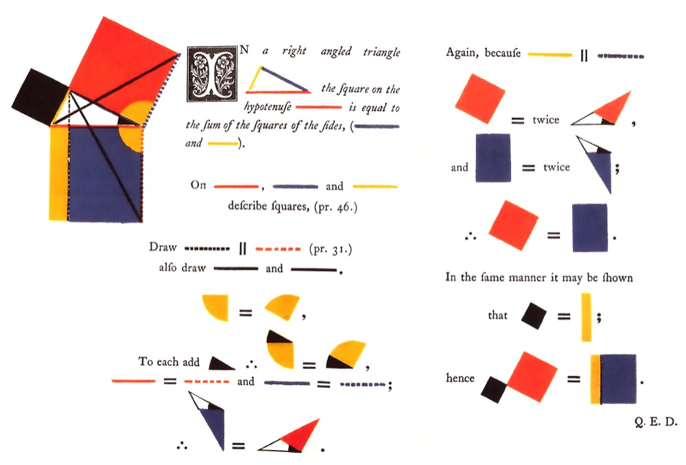

Somewhere around the ninth grade, a teacher made you prove two triangles were the same. You wrote statements down one side of the page and a reason for each one down the other, and every reason had to be a rule you had already agreed to. It felt like a pointless ritual. That ritual is about 2,300 years old, and it may be the most powerful idea anyone has ever had.
It comes from one book. The Elements, written by a man named Euclid in the Greek city of Alexandria around 300 BC. This is the book where the idea of proof, of pinning a thing down so hard that no one can ever argue it back open, stopped being an occasional trick and became a method you could teach. Not a clever proof here and there. A whole world of them, hundreds, each one locked to the one before it, the entire structure resting on a handful of starting rules a child would nod along to.
It worked so well that it became the most successful textbook in the history of the world. For more than two thousand years, if you learned geometry, you learned it out of Euclid. Students were still being drilled straight from the Elements in the early 1900s. Only the Bible has been printed in more editions. No other schoolbook is even close.
And here is the twist that runs through the whole thing. The geometry is not really the point. What Euclid invented was not a pile of facts about triangles, it was a machine for producing certainty, a way to start from almost nothing and force everything else to follow, and that machine got borrowed by physics, by philosophy, and by the men who wrote the American Declaration of Independence. This is a walk through it in seven stops, and because Euclid is one of the few thinkers whose argument you can actually watch happen, the diagrams here build themselves, the way his reader would have drawn them, with a compass and a straightedge and nothing else.
Stop 1 / definitions, postulates, common notions
Start from almost nothing
Euclid opens not with a theorem but with a list of things he is going to assume, and the striking part is how short the list is. Everything in the Elements, all 465 propositions across thirteen books, is built out of three small piles of starting material, and the whole foundation fits on half a page.
First, definitions, fixing what his words mean so no argument can hide in a fuzzy one. A point is "that which has no part." A line is "breadthless length." He is nailing down the vocabulary before he builds.
Then five postulates, the geometric moves he lets himself make. Read them and notice how tiny they are, and that the first three are not even claims, they are permissions, things you are allowed to do with two tools and no others: a straightedge with no marks, and a compass.
Postulate 1
To draw a straight line from any point to any point.
Postulate 2
To produce a finite straight line continuously in a straight line.
Postulate 3
To describe a circle with any centre and distance.
Postulate 4
That all right angles are equal to one another.
Postulate 5
The awkward one about parallel lines. It gets its own stop later, because two thousand years of trouble came out of it.
Then five common notions, the plain logic anyone grants, not even about geometry: things equal to the same thing are equal to each other; if you add equals to equals the results are equal; the whole is greater than the part.
That is the entire foundation. A page of the obvious. And from here on Euclid will not let himself say that a single new thing is true unless he can march it, step by step, all the way back down to this page. The genius of the Elements is not any one theorem. It is the decision to build a universe from a floor this small, and to never once cheat by just asserting something because it looks right.
Stop 2 / Book I, Proposition 1
Build a perfect triangle from nothing
Heath / Book I, Proposition 1
On a given finite straight line to construct an equilateral triangle.
With centre A and distance AB let the circle BCD be described; again, with centre B and distance BA let the circle ACE be described; and from the point C, in which the circles cut one another, to the points A, B let the straight lines CA, CB be joined.
Elements I, Proposition 1 · T.L. HeathWatch what he does with those crude little rules. The very first proposition demands something that sounds impossible with a pen and a compass: build a perfect equilateral triangle, all three sides exactly equal, on a given line.
Here is the whole trick, and you just watched it. Take the line, call its ends A and B. Put the compass point on A, open it to B, swing a full circle. Move the point to B, open it back to A, swing another. The two circles cross at a point, call it C. Draw C to A, and C to B. That triangle is equilateral, exactly, guaranteed, forever.
Why guaranteed? This is the beautiful part, and it is the entire method in one breath. C sits on the first circle, centered at A, so the distance A to C equals the distance A to B, because every point on a circle is the same distance from its center, which was a definition. C also sits on the second circle, centered at B, so B to C equals B to A for the same reason. Now A to C equals A to B, and B to C equals A to B, so by a common notion, things equal to the same thing are equal to each other, all three lengths are equal. He signs it off with the phrase students still write at the bottom of a proof: being what it was required to do.
Look at what did not happen. He never measured anything. He never said "that looks about equal." He forced it. The triangle is equilateral not because it happened to come out that way but because it could not have come out any other way, and every link in the chain is a definition or a rule you already granted. That is a proof. Proposition 1 of Book I, and the machine is already running.
Stop 3 / the shape of every argument
What a proof actually is
Step back and look at the shape of what just happened, because Euclid repeats it hundreds of times and it is the thing he really invented. Every proposition has the same skeleton. State exactly what you will show. Do the construction. Then prove it works, and every single sentence of the proof points at its reason: a definition, a postulate, a common notion, or a proposition already proved. Nothing floats. Nothing is true just because it is obvious, or because Euclid says so.
That last part is the revolution, and it is easy to miss because we were all raised inside it. Before this, "how do you know?" was answered by an authority, or by "look, it is obvious," or by whoever gave the better speech. Euclid answers it a completely different way: I know because it follows. Grant the starting rules, grant each step, and you are trapped into the conclusion. There is no escape and no appeal to who is saying it. A proof is a machine for turning things you already believe into things you did not know you believed, leaving no room to wriggle out.
And it compounds. Once a proposition is proved, it becomes a tool for proving the next, which becomes a tool for the next, and the tower climbs. By the end of Book I he is proving things about parallel lines and areas that nobody would accept on sight, and every one of them is bolted, through a chain you can walk by hand, back down to that half page of the obvious.
Stop 4 / Book I, Proposition 47
The one everyone half-remembers
Heath / Book I, Proposition 47
In right-angled triangles the square on the side subtending the right angle is equal to the squares on the sides containing the right angle.
Elements I, Proposition 47 · T.L. Heathsquare on the long side (c²) = square on one leg (a²) + square on the other (b²)
Forty-six propositions later, Book I arrives at the one theorem everybody half-remembers, usually mangled as "a squared plus b squared equals c squared." Euclid had no algebra and writes no equation. He writes a fact about areas: in a right triangle, the square built on the longest side, the one across from the right angle, holds exactly as much area as the two squares built on the other two sides put together.
The picture above is the whole statement. Build a literal square on each side of the triangle. The big tilted one, on the long side, covers exactly as much ground as the other two combined. Make the short sides 3 and 4 and their squares hold 9 and 16; the square on the long side holds precisely 25. That relationship is the seed of all of trigonometry, of navigation, of how your phone finds itself with GPS, and eventually of the distance formula in Einstein's spacetime, sitting here as proposition 47 of the very first book.
What makes it Euclid and not just Pythagoras is that he does not measure the squares, he proves the areas are equal, by slicing the big square into two pieces and showing each piece matches one of the small squares exactly, using area theorems he had bolted down over the previous ten propositions. Plenty of cultures knew the 3-4-5 rope trick by experience long before him. The point of the Elements is never that a fact is true. It is that here, for the first time, it is forced, true not because anyone checked but because the axioms leave it no way out.

Stop 5 / the fifth postulate
The rule that did not fit
Heath / Book I, Postulate 5
That, if a straight line falling on two straight lines make the interior angles on the same side less than two right angles, the two straight lines, if produced indefinitely, meet on that side on which are the angles less than the two right angles.
Elements I, Postulate 5 · T.L. Heathinterior angles α + β less than two right angles, so the lines meet on that side
Go back and read those five postulates again, and one of them is not like the others. Four are a single short breath each: draw a line, extend a line, draw a circle, all right angles are equal. The fifth needs a whole paragraph, printed above, and you have to read it twice. Decoded, it says: if two lines lean toward each other, they will eventually meet on the side they are leaning. It is the parallel postulate, and it is really a statement about when lines never meet: given a line and a point off it, there is exactly one line through that point that stays parallel forever.
It is obviously true. It is also, sitting next to the other four, obviously ugly. It has none of the instant, childlike self-evidence of "all right angles are equal." It reads like a theorem, something that ought to be provable, not something you should have to assume. Euclid himself seems to have flinched at it. He avoids using the fifth postulate for as long as he possibly can, grinding out his first twenty-eight propositions without it, and only reaches for it at Proposition 29 because he finally has no choice.
So for the next two thousand years, the best mathematicians alive tried to fix what they took to be Euclid's one blemish. Surely, they thought, this ugly fifth rule is secretly a theorem, provable from the clean first four. Prove it, and you could strike it from the list of assumptions and the foundation would be flawless. Ptolemy tried. The great Arab mathematicians tried for centuries. Every one of them failed, and every time someone thought they had it, another found the buried spot where they had quietly assumed the very thing they were trying to prove.
Stop 6 / the two-thousand-year payoff
The flaw was a door
on a sphere, a triangle's three angles add to more than 180°. Euclid "proved" that impossible. On a flat page he was right; here he is not.
The two-thousand-year failure turned out to be the most productive failure in the history of mathematics, because the reason nobody could prove the fifth postulate is that it cannot be proved. It is a genuine choice, not a hidden theorem. And in the 1820s and 30s a few people, most famously a young Hungarian named Janos Bolyai and a Russian named Nikolai Lobachevsky, working apart and against their peers' advice, finally asked the heretical question: what if we just do not assume it? What if we assume the opposite?
You would expect the whole structure to collapse into nonsense. It does not. Assume that through a point you can draw many lines parallel to a given one, and instead of contradiction you get a different geometry, complete and self-consistent, describing a space that curves away from itself like an endless saddle. Assume there are no parallels, that every pair of lines eventually meets, and you get another one, the geometry of the surface of a sphere. Draw a big enough triangle on a globe, up from the equator to the north pole and back down, and its three angles add up to more than 180 degrees, which Euclid had "proven" was flatly impossible. On a flat sheet, he was right. On a sphere, he was wrong. Neither is the one true geometry. They are just different, each one locked to its own answer about that fifth rule.
Then came the twist that would have stopped Euclid's heart. Which geometry does our actual universe run on? Not his. In 1915, Einstein showed that gravity is nothing but the curving of space and time, that space itself bends around a star, and that across the cosmos as a whole the geometry is not flat. The straight line, the flat plane, the triangle whose angles make a tidy 180 degrees, the thing every schoolchild was handed for two thousand years as the plain truth about space, is a local approximation, near enough inside a room and quietly false across a galaxy. Euclid's one ugly assumption was never a blemish to scrub out. It was the single load-bearing choice in the whole cathedral, and prying it loose opened the door to the geometry the real universe is written in.
Stop 7 / what we actually kept
The method outlived the geometry
So the content got surpassed. The astonishing thing is that the method never did. Long after we learned that Euclid's geometry is not the last word on space, his way of building an argument, axioms at the bottom and an unbroken chain of "therefore" climbing up to the conclusion, became the gold standard for what it means to truly know a thing, in fields that have nothing to do with triangles.
Newton wrote the Principia, the book that founded modern physics, as a march of Euclidean propositions, definitions and axioms and proofs, because that was simply what a serious argument was supposed to look like. Spinoza tried to do it to ethics, laying out his entire moral philosophy "in geometrical order," with numbered definitions and axioms and a little which was to be demonstrated stamped after each claim about God and the good life. Whether he pulled it off is another question, but the ambition is pure Euclid: make morality as certain as a triangle.
And it soaked into how we argue about everything. When Jefferson opens the Declaration of Independence with "we hold these truths to be self-evident," he is reaching for exactly Euclid's move: state the axioms, the things no reasonable person will deny, then force the conclusion, that a people may govern themselves, to follow. Lincoln, already a congressman, taught himself the first six books of the Elements by lamplight, and said he did it because he kept using the word "demonstrate" and wanted to know what it really meant. He had hit the limit of his own reasoning and went to the source to buy the thing Euclid was selling.
That is the inheritance. Not the triangles. The idea that you can take a few things everyone already agrees on and, by nothing but honest steps, build your way out to conclusions nobody could have guessed and no one can deny. Every proof in every math paper, every "self-evident" in every argument, every time a scientist says a result follows from the assumptions, is running on the machine Euclid built.
The geometry turned out to be one map among many. The method turned out to be how we find our way at all. Twenty-three centuries later, when you want to say you have really nailed something down, past all argument, you still say you have proven it, and somewhere behind the word there is a man with a compass and a straightedge, refusing to take anyone's word for anything.
Where the text comes from
The featured translation is Sir Thomas L. Heath's, from his 1908 Cambridge edition The Thirteen Books of Euclid's Elements, long in the public domain and still the standard English Euclid, so every line above is quoted exactly. Heath's is the version, footnotes and all, that most English readers have met Euclid in for over a century. Every quotation was checked against the text rather than trusted to memory; the definitions, all five postulates, all five common notions, and Propositions 1 and 47 are verbatim.
- The featured text is T.L. Heath's translation (Cambridge, 1908), quoted from David E. Joyce's and David R. Wilkins' careful online transcriptions of Book I.
- The figures are original. The constructions are built to Euclid's own recipe, so Proposition 1 really does draw itself with two equal circles and two lines, the same steps his reader followed with a compass. The colored plate at Proposition 47 is from Oliver Byrne's 1847 edition, in the public domain via Wikimedia Commons.
- The later history leans on standard accounts of the parallel-postulate problem and its resolution by Bolyai, Lobachevsky, and Gauss, on David Hilbert's Foundations of Geometry (1899) for the gaps in Euclid's rigor, and on Einstein's general relativity (1915) for the non-Euclidean shape of real space.
Two honest notes. We know almost nothing about Euclid the man, not when he was born, not where, barely even that he was one person rather than the name of a school. And he did not discover most of the Elements; he collected and reorganized results already worked out by others, Eudoxus on proportion, Theaetetus on the regular solids. His towering achievement is not the theorems, it is the architecture, the decision to prove all of it from one small floor and the discipline to actually do it. Second, the famous "flaw" of the fifth postulate was not a mistake at all. Euclid was right to make it an assumption. The two-thousand-year effort to prove it away was the real error, and the people who finally accepted it as a free choice are the ones who found the door.
The image on the homepage card is a plate from Byrne's 1847 Euclid, one of the most beautiful books of the nineteenth century and a genuine ancestor of what this page tries to do: show the proof instead of only telling it. The count of 465 propositions and thirteen books is Heath's. Any errors in the retellings and the diagrams are mine, not Euclid's, and certainly not Heath's.